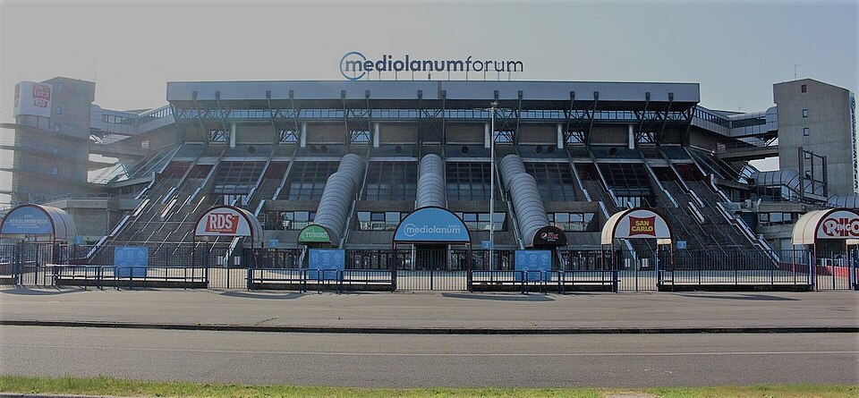

I concerti
Dal vivo Lazza spesso suona il pianoforte sul palco mentre canta. Questi sono i suoi tour più importanti.
| Anno | Tour |
|---|---|
| 2017 | Zzala tour |
| 2019 | Re Mida tour |
| 2022 | Sirio tour |
| 2023 | Ouver-tour, il primo tour nei palazzetti |
| 2025 | Locura tour, poi il Locura European tour e il Locura Summer tour |

Il Red Valley Festival
Nell'estate 2023 Lazza ha cantato al Red Valley Festival di Olbia, in Sardegna, uno dei festival più grandi d'Italia per la musica rap e pop.

Premi il bottone
Premi il bottone per saperlo...